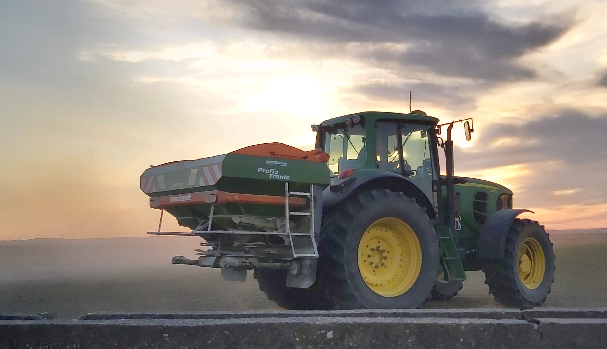

La agricultura en Extremadura es un pilar fundamental de la economía regional. Su clima y suelos fértiles favorecen el cultivo de una gran variedad de productos, entre los que destacan los tomates, el maíz y el arroz.
Impacto económico: representa aproximadamente el 8% del PIB regional, una cifra muy superior a la media. Genera empleo para más del 20% de la población activa.
Seguramente se esté preguntando el por qué de una web dedicada a ello.
Tengo la suerte de ser parte de una familia donde todos somos agricultores, siguiendo con la tradición y el oficio que empezaron todos nuestros antepasados.
En concreto somos de Miajadas, un pueblo situado en el centro de Extremadura y perteneciente a la provincia de Cáceres. Además, dicho pueblo es la Capital Europea del Tomate.
Aunque actualmente me encuentre estudiando en Madrid, nunca dejará de ser una parte de mí el campo ya que es donde me he criado y crecido.
Es por ello que al menos dedicar este proyecto a que conozcáis un poco más acerca de los principales cultivos y nuestro trabajo.
Este soy yo conduciendo uno de nuestros tractores
Para que conozcáis algo más sobre nuestro trabajo, quiero que veáis los tres cultivos que mayor explotación tenemos como son los tomates, el arroz y el maíz.
Destacar que estos no son los únicos ya que en la zona también es muy popular los olivos, el trigo o el girasol entre otros.
Estos son los datos de la última campaña, la 2024. En la tabla podemos ver el cultivo, las hectáreas que hemos sembrado y la producción total en toneladas:
| Producto | Hectáreas cultivadas | Producción anual (Toneladas) |
|---|---|---|
| Tomates | 50 | 8.000 |
| Arroz | 80 | 760 |
| Maíz | 60 | 1.260 |
Aquí te dejo el enlace a cada cultivo para verlo más en profundidad:
Si quieres más información sobre la agricultura en mi zona, puedes dejármela por aquí y te responderé encantado.
🏆 High Score: 0
Pregunta aquí...
Puntuación: 0
Tu puntuación: 0